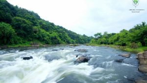

The district headquarters is at Pathanamthitta town. The district administration is headed by the District Collector. He/She is assisted by five Deputy Collectors holding charges of general matters, revenue recovery, land acquisition, land reforms, election and Disaster Management. Under the three tier system of panchayat in rural areas, Pathanamthitta has one district panchayat, 8 block panchayat and 53 grama panchayats. Under the single tier system in urban areas, there are 4 municipalities in the district. In addition, there is a census town (Kozhencherry).
As per the Delimitation of Parliamentary and Assembly Constituencies Order, 2008, Pathanamthitta has five Assembly constituencies, down from eight. However, the district was unified into a single Parliamentary constituency, thus contributing a seat to the Lok Sabha. The Pathanamthitta parliamentary constituency is formed by including all the five Assembly constituencies of the district along with two other Assembly constituencies in the neighboring Kottayam district. Congress, Kerala Congress, CPM, and CPI are the main political parties.
Places to visit:
Perunthenaruvi Waterfalls
Gavi
Adavi and Konni

Pamba River